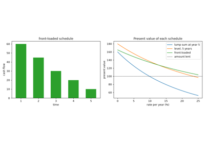
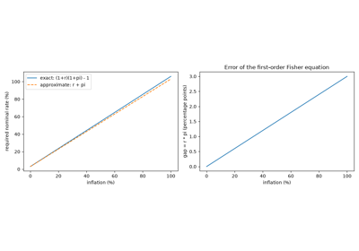
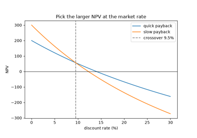
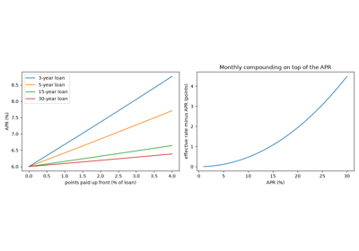

Breakthroughs in the Time Value of Money#
“Money is the seed of money, and the first guinea is sometimes more difficult to acquire than the second million.” – Jean-Jacques Rousseau, Discourse on Political Economy (1755)
A sum of money today is worth more than the same sum later, because it
can be lent at interest in the meantime. Turning that observation into
arithmetic – compounding, discounting, valuing streams of payments,
finding the rate a project earns, and agreeing how many days a period
contains – took six centuries of merchants, actuaries, economists and
regulators. This chronology traces the ideas behind
financialkit.time_value.
c. 1202 – Fibonacci’s Liber Abaci: Present Value#
Leonardo of Pisa’s Liber Abaci brought Hindu-Arabic numerals to European merchants, and its twelfth chapter applies them to commerce: partnerships, loans repaid in instalments, and investments that grow at a fixed rate per period. William Goetzmann has argued that in these problems Fibonacci compares alternative payment schedules by discounting each instalment back to the start, which makes him the first known author to use present-value analysis.
Implementation: financialkit.time_value.present_value(), with
discount factors from financialkit.time_value.discount_factor().

Fibonacci’s present value: comparing payment schedules
1494 – Pacioli’s Rule of 72#
Luca Pacioli’s Summa de arithmetica, geometria, proportioni et proportionalita, best known for its account of double-entry bookkeeping, also states without proof that money doubles in about 72 divided by the annual percentage rate. The exact doubling time under annual compounding is \(\ln 2 / \ln(1 + r)\); the rule is a first-order approximation whose constant, 72 rather than \(100 \ln 2 \approx 69.3\), partly corrects for the curvature of the logarithm at typical rates.
Implementation: financialkit.time_value.rule_of_72() and the
exact financialkit.time_value.doubling_time().
1613 – Witt’s Compound-Interest Tables#
Simon Stevin had published interest tables in 1582, and Richard Witt’s Arithmeticall Questions (London, 1613) was the first such work in English. For each rate it tabulated the amount of 1 after \(n\) years, its present value, and the value of an annuity of 1, together with worked questions on leases, loans and annuities. Tables like these made compound interest usable by anyone who could multiply, and their columns are still the standard actuarial functions \((1 + i)^n\), \(v^n\), \(a_{\overline{n}|}\) and \(s_{\overline{n}|}\).
Implementation: financialkit.time_value.compound_interest_table(),
returning a CompoundingTable.
1671 – De Witt’s Life Annuities#
Johan de Witt, Grand Pensionary of Holland, argued in Waerdye van Lyf-renten naer proportie van Los-renten that the life annuities the province sold were underpriced. He valued an annuity as the expected present value of its payments: each payment discounted at 4% and weighted by the probability that the annuitant survives to receive it, under the hypothesis that the chance of death is constant in each half-year up to age 53 and then rises by fixed ratios. It was among the first applications of probability to a financial contract.
Implementation: financialkit.time_value.life_annuity_value() with
financialkit.time_value.de_witt_survival().
1683 – Bernoulli and Continuous Compounding#
Jacob Bernoulli asked how much a debt lent at interest grows if the interest is added in ever smaller instalments. At a rate of 100% the value after one year is \((1 + 1/m)^m\) for \(m\) compounding periods; in Acta Eruditorum (1690) he showed that this increases with \(m\) but stays between 2.5 and 3. The limit is the number \(e\), and continuous compounding, \(e^{rt}\), became the natural convention of continuous-time finance.
Implementation: financialkit.time_value.future_value() and
financialkit.time_value.equivalent_rate() (compounding=None is
continuous).
1751 – Consols and the Perpetuity#
Henry Pelham’s conversion of 1751 merged several British government loans into the “3 per cent consolidated annuities”: bonds that paid 3 a year per 100 face value and were never to be repaid. A perpetuity is worth \(P / i\), so the consol’s price was simply the inverse of the long-term yield, and for two centuries consol yields were the standard measure of British long-term interest rates.
Implementation: financialkit.time_value.perpetuity_present_value()
and its finite counterpart
financialkit.time_value.annuity_present_value().
1772 – Price’s Sinking Fund#
Richard Price’s An Appeal to the Public on the Subject of the National Debt proposed that Britain set aside a fixed sum every year and let it accumulate at compound interest until it could repay the debt. The level deposit that grows to \(F\) in \(n\) periods is \(F / s_{\overline{n}|}\). William Pitt established such a fund in 1786; it failed in practice because the government borrowed to feed it, but the arithmetic is the basis of every sinking-fund provision in bond indentures.
Implementation: financialkit.time_value.sinking_fund_payment()
and financialkit.time_value.sinking_fund_schedule().
1896 – Fisher’s Real and Nominal Rates#
In Appreciation and Interest Irving Fisher argued that when lenders expect the value of money to change they adjust the rate of interest to compensate, so that the nominal rate combines a real rate and expected inflation. The relation bears his name and underlies inflation-indexed bonds and the separation of real and nominal yield curves.
Implementation: financialkit.time_value.fisher_real_rate() and
financialkit.time_value.fisher_nominal_rate().

Fisher’s real and nominal rates of interest
1907 – Fisher’s Net Present Value#
The Rate of Interest set out the principle that, where money can be borrowed and lent at a market rate, the best choice among income streams is the one with the largest present value, independently of the owner’s preferences about when to consume. Net present value – present value of inflows less the cost – became the criterion of capital budgeting once Joel Dean and others carried it into corporate practice in the 1950s.
Implementation: financialkit.time_value.npv().

Fisher’s net present value: choosing between income streams
1930 – The Internal Rate of Return#
In The Theory of Interest Fisher defined the “rate of return over cost” as the discount rate that makes the present values of two alternatives equal; Keynes’s marginal efficiency of capital (1936) is the same idea. Applied to a single project against doing nothing, it is the internal rate of return: the rate at which NPV is zero. For a conventional project it is unique, and comparing it with the cost of capital gives the same decision as NPV.
Implementation: financialkit.time_value.irr(), which brackets the
root on a grid and polishes it with scipy.optimize.brentq(), and
financialkit.time_value.npv_profile().
1933 – The Fully Amortizing Mortgage#
The Home Owners’ Loan Corporation, created in 1933 to refinance defaulting home loans, and then the Federal Housing Administration (1934) replaced short, interest-only balloon mortgages with long-term, level-payment loans that repay themselves. Each payment is \(L / a_{\overline{n}|}\); it first pays interest on the balance and the remainder reduces principal, so the balance reaches zero exactly at the last payment.
Implementation: financialkit.time_value.loan_payment() and
financialkit.time_value.amortization_schedule(), returning an
AmortizationSchedule.
1955 – Lorie and Savage: Multiple IRRs#
James Lorie and Leonard Savage’s “Three Problems in Rationing Capital” (Journal of Business) showed that a project whose cash flows change sign more than once can have several internal rates of return. Their oil-pump example, \(-1600, +10000, -10000\), has IRRs of 25% and 400%, and neither says whether the project is worth doing. By Descartes’ rule of signs, \(k\) sign changes allow up to \(k\) positive roots of the NPV polynomial in \(v = 1/(1+r)\).
Implementation: financialkit.time_value.irr_all() (all roots via
numpy.roots()), financialkit.time_value.sign_changes(), and
the MultipleIRRWarning raised by
irr().
1959 – Baldwin’s Modified IRR#
Robert Baldwin’s “How to Assess Investment Proposals” (Harvard Business Review) proposed compounding a project’s inflows forward at a reinvestment rate the firm can actually earn and discounting its outflows at its finance rate, then reporting the single rate that links the two. The modified IRR always exists, is unique, and does not assume that interim cash flows earn the project’s own IRR.
Implementation: financialkit.time_value.mirr().
1968 – Truth in Lending: APR and the Effective Rate#
The U.S. Consumer Credit Protection Act of 1968, Title I of which is the Truth in Lending Act, required lenders to disclose the finance charge and an annual percentage rate computed by one actuarial method (Regulation Z, Appendix J): the nominal rate at which the scheduled payments are worth the amount financed after prepaid fees. Fees and points therefore show up in the APR, and borrowers can compare loans on a single number – although, being nominal, the APR is still below the effective annual rate.
Implementation: financialkit.time_value.annual_percentage_rate()
(scipy.optimize.brentq()) and
financialkit.time_value.effective_annual_rate().

Truth in Lending: APR and the effective rate
1993 – SIA 30/360 and Accrued Interest#
The Securities Industry Association’s Standard Securities Calculation Methods (third edition by Jan Mayle, 1993) codified the formulas U.S. dealers use for bond prices, yields and accrued interest, including the 30/360 day count with its rules for the 31st of the month and the end of February. A bond buyer pays the seller the coupon accrued since the last coupon date, and with 30/360 every month accrues the same amount.
Implementation: financialkit.time_value.day_count()
(DayCount.THIRTY_360_US and DayCount.THIRTY_E_360) and
financialkit.time_value.accrued_interest().
1998 – ISDA’s Actual/Actual and the Day-Count Zoo#
Ahead of the euro’s launch, the International Swaps and Derivatives Association’s memo EMU and Market Conventions: Recent Developments laid out the actual/actual conventions side by side, as the euro government bond markets moved to actual/actual: the ISDA method divides the days in each calendar year by that year’s length, while the ICMA (then ISMA) method divides by the length of the coupon period. Its worked example – November 1, 2003 to May 1, 2004 is \(61/365 + 121/366 = 0.49772\) – is a standard test case, and the 2006 ISDA Definitions remain the reference for every day count in derivatives confirmations.
Implementation: financialkit.time_value.year_fraction() for every
DayCount member, including
ACT_ACT_ISDA.